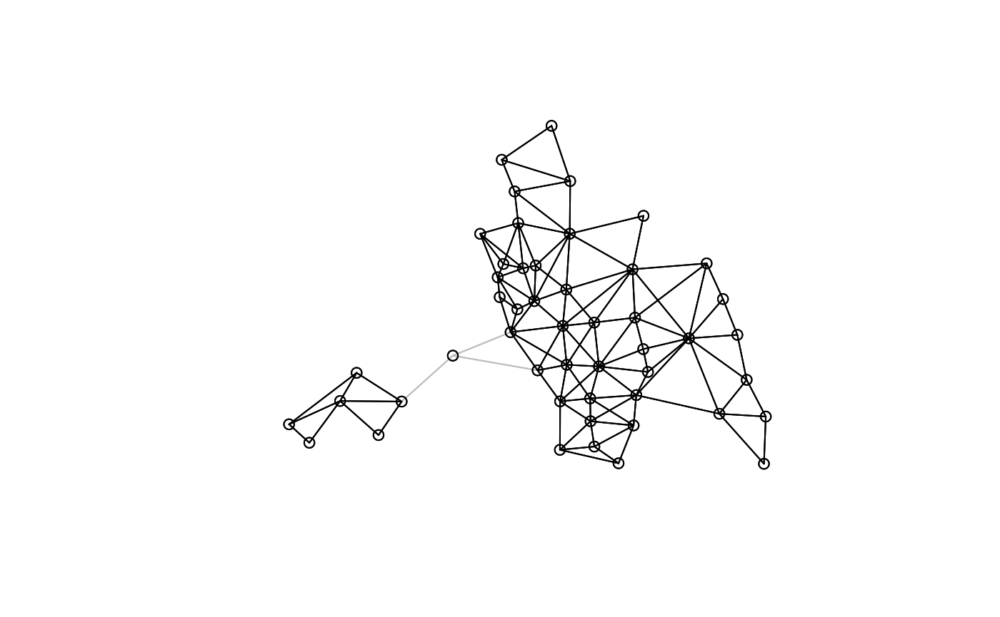

Spatial weights objects as sparse matrices and graphs
Roger Bivand
Source:vignettes/nb_igraph.Rmd
nb_igraph.RmdIntroduction
Since the spdep package was created, spatial
weights objects have been constructed as lists with three
components and a few attributes, in old-style class listw
objects. The first component of a listw object is an
nb object, a list of n integer vectors, with
at least a character vector region.id attribute with
n unique values (like the row.names of a
data.frame object); n is the number of spatial
entities. Component i of this list contains the integer
identifiers of the neighbours of i as a sorted vector with
no duplication and values in 1:n; if i has no
neighbours, the component is a vector of length 1 with
value 0L. The nb object may contain an
attribute indicating whether it is symmetric or not, that is whether
i is a neighbour of j implies that
j is a neighbour of i. Some neighbour
definitions are symmetric by construction, such as contiguities or
distance thresholds, others are asymmetric, such as
k-nearest neighbours. The nb object
redundantly stores both i-j and
j-i links.
The second component of a listw object is a list of
n numeric vectors, each of the same length as the
corresponding non-zero vectors in the nbobject. These give
the values of the spatial weights for each i-j
neighbour pair. It is often the case that while the neighbours are
symmetric by construction, the weights are not, as for example when
weights are row-standardised by dividing each row of input
weights by the count of neighbours or cardinality of the neighbour set
of i. In the nb2listwfunction, it is also
possible to pass through general weights, such as inverse distances,
shares of boundary lengths and so on.
The third component of a listw object records the
style of the weights as a character code, with
"B" for binary weights taking values zero or one (only one
is recorded), "W" for row-standardised weights, and so on.
In order to subset listw objects, knowledge of the
style may be necessary
It is obvious that this is similar to the way in which sparse
matrices are stored, either by row - like the listw object,
or by column. The key insight is that storing zero values is
unnecessary, as we only need to store the row and column locations of
non-zero values. Early on, a Netlib library was used to provide limited
support in spdep for sparse matrices, followed by
functionality in SparseM, spam, and
Matrix.
From spdep and spatialreg versions 1.2, this vignette and accompanying functionality has been moved to spatialreg.
spatialreg depends on Matrix
Since Matrix is a recommended package, its functionality has increasingly been used over time, and it has become one of two packages on which spatialreg depends. This is reported on loading:
## Loading required package: spData## Loading required package: Matrix## Loading required package: sf## Linking to GEOS 3.13.0, GDAL 3.10.0, PROJ 9.5.0; sf_use_s2() is TRUEGetting some data
The legacy Columbus OH data set has 49 spatial entities, polygons, defined as the boundaries of policing districts in the city. spatialreg imports from spdep which in turn depends on sf.
dothis <- TRUE
if (!suppressPackageStartupMessages(require(sf, quietly=TRUE))) {
message("install the sf package")
dothis <- FALSE
}
if (dothis) {
sf_extSoftVersion()
}## GEOS GDAL proj.4 GDAL_with_GEOS USE_PROJ_H
## "3.13.0" "3.10.0" "9.5.0" "true" "true"
## PROJ
## "9.5.0"
library(sf)
columbus <- st_read(system.file("shapes/columbus.gpkg", package="spData")[1])## Reading layer `columbus' from data source
## `/home/rsb/lib/r_libs/spData/shapes/columbus.gpkg' using driver `GPKG'
## Simple feature collection with 49 features and 20 fields
## Geometry type: POLYGON
## Dimension: XY
## Bounding box: xmin: 5.874907 ymin: 10.78863 xmax: 11.28742 ymax: 14.74245
## Projected CRS: Undefined Cartesian SRS with unknown unit
row.names(columbus)[1:10]## [1] "1" "2" "3" "4" "5" "6" "7" "8" "9" "10"Finding contiguous neighbours and droppping links
Contiguous neighbours are often used for polygonal spatial entities,
here with the poly2nb function defaulting to the
queen criterion - entities are neighbours if they share a
boundary point. We see that the entity IDs are copied across to the
nb object:
nb_q <- spdep::poly2nb(columbus)
nb_q## Neighbour list object:
## Number of regions: 49
## Number of nonzero links: 236
## Percentage nonzero weights: 9.829238
## Average number of links: 4.816327
attr(nb_q, "region.id")[1:10]## [1] "1" "2" "3" "4" "5" "6" "7" "8" "9" "10"
spdep::is.symmetric.nb(nb_q)## [1] TRUEIn order to make the object more complicated, let us drop the
neighbour links for the 21st entity (noting that the print method
reports the ID of the entity with no neighbours, not its number in
1:n), and plot the resulting map of neighbours:
col2 <- spdep::droplinks(nb_q, 21)## Warning in spdep::droplinks(nb_q, 21): some observations have no neighbours## Warning in spdep::droplinks(nb_q, 21): neighbour object has 3 sub-graphs
nb_q[[21]]## [1] 24 30 34
col2[[21]]## [1] 0
col2## Neighbour list object:
## Number of regions: 49
## Number of nonzero links: 230
## Percentage nonzero weights: 9.579342
## Average number of links: 4.693878
## 1 region with no links:
## 21
## 3 disjoint connected subgraphs
spdep::is.symmetric.nb(col2)## [1] TRUE
coords <- st_coordinates(st_centroid(st_geometry(columbus)))
plot(nb_q, coords, col="grey")
plot(col2, coords, add=TRUE)
Using sparse matrices to represent spatial weights
At present only listw objects can be coerced to objects
of classes defined in Matrix. Because the
style is lost on coercion, it may not be possible to
reconstruct spatial weights as the sparse matrix representation does not
preserve it. We will start with symmetric binary weights, first creating
a spatial weights object, and signalling that one entity has no
neighbours with the zero.policy argument (default false).
The matrix and graph representations of no-neighbour entities are not
obvious.
nb_B <- spdep::nb2listw(col2, style="B", zero.policy=TRUE)
nb_B$style## [1] "B"Symmetric sparse matrices
spdep provides coercion methods from
listw to the "symmetricMatrix",
"RsparseMatrix" and "CsparseMatrix" classes
defined in Matrix. The "RsparseMatrix" is
the representation that is most similar to listw, as it is
row-based, but it is used less frequently in operations on sparse
matrices. The entity IDs are passed using sparse matrix row and column
names at present. Here we believe that our listw object can
be represented as a symmetric matrix, storing only a triangle rather
than both i-j and
j-i weights. The coercion method does check
whether symmetry is present before proceeding:
## [1] TRUE
str(B)## Formal class 'dgCMatrix' [package "Matrix"] with 6 slots
## ..@ i : int [1:230] 1 2 0 2 3 0 1 3 4 1 ...
## ..@ p : int [1:50] 0 2 5 9 13 21 23 27 33 41 ...
## ..@ Dim : int [1:2] 49 49
## ..@ Dimnames:List of 2
## .. ..$ : chr [1:49] "1" "2" "3" "4" ...
## .. ..$ : chr [1:49] "1" "2" "3" "4" ...
## ..@ x : num [1:230] 1 1 1 1 1 1 1 1 1 1 ...
## ..@ factors : list()
rownames(B)[1:10]## [1] "1" "2" "3" "4" "5" "6" "7" "8" "9" "10"Let us now try to retreive the list of neighbours from the symmetric
sparse matrix. At present, we have to coerce from one
Matrix internal representation to another in order to
get to the "dgCMatrix" format used inside
mat2listw, so we coerce to "dgTMatrix" from
"dsTMatrix". The style is not retreived automatically, but
is set to "M" to indicate conversion from a matrix. The
neighbour links are retreived correctly, as are the IDs:
## Warning in sn2listw(df, style = style, zero.policy = zero.policy, from_mat2listw = TRUE): no-neighbour observations found, set zero.policy to TRUE;
## this warning will soon become an error## Warning in sn2listw(df, style = style, zero.policy = zero.policy,
## from_mat2listw = TRUE): neighbour object has 3 sub-graphs## Warning in spdep::mat2listw(as(as(B, "TsparseMatrix"), "CsparseMatrix"), :
## neighbour object has 3 sub-graphs
nb_B1$style## [1] "B"
all.equal(nb_B1$neighbours, col2, check.attributes=FALSE)## [1] TRUE## [1] TRUELog determinants (symmetric weights) used in spatial regression
An initial reason for implementing support for sparse weights
matrices in spdep was to permit the calculation of the
log determinant term in spatial regressions for larger data sets. Using
the eigenvalue approach with for example spatialreg::eigenw
is limited by the need to operate on dense matrices in memory to solve
the eigenproblem:
rho <- 0.1
do_spatialreg <- FALSE
if (requireNamespace("spatialreg", quietly=TRUE)) do_spatialreg <- TRUE
if (do_spatialreg) sum(log(1 - rho * spatialreg::eigenw(nb_B)))## [1] -1.44787When n is large, this may become impractical and/or
time-consuming, but does permit the rapid calculation of values of the
log determinant for differing values of the spatial coefficient
.
The Matrix package provides many
determinant methods, here for a "dsCMatrix"
resulting from subtracting a "dsCMatrix", the product of a
scalar and a "dsTMatrix", from a "ddiMatrix".
The value of the log determinant follows, calling a sparse Cholesky
decomposition internally for suitable input matrices.
## [1] "dgCMatrix"
## attr(,"package")
## [1] "Matrix"
c(determinant(I - rho * B, logarithm=TRUE)$modulus)## [1] -1.44787The computation of a sparse Cholesky decomposition for each value of the spatial coefficient may be avoided by updating a pre-computed object; this approach provides fast and accurate log determinants for larger (but not very large) data sets:
nW <- -B
nChol <- Cholesky(nW, Imult=8)
n * log(rho) + (2 * c(determinant(update(nChol, nW, 1/rho), sqrt=TRUE)$modulus))## [1] 15.40218Asymmetric sparse matrices
The use of row-standardisation leads to asymmetry even if the underlying neighbours are symmetric, unless all entities have matching numbers of neighbours (for example a regular grid on a torus):
## Formal class 'dgCMatrix' [package "Matrix"] with 6 slots
## ..@ i : int [1:230] 1 2 0 2 3 0 1 3 4 1 ...
## ..@ p : int [1:50] 0 2 5 9 13 21 23 27 33 41 ...
## ..@ Dim : int [1:2] 49 49
## ..@ Dimnames:List of 2
## .. ..$ : chr [1:49] "1" "2" "3" "4" ...
## .. ..$ : chr [1:49] "1" "2" "3" "4" ...
## ..@ x : num [1:230] 0.333 0.25 0.5 0.25 0.25 ...
## ..@ factors : list()## [1] FALSEThe lag method for listw objects is often
used to create spatially lagged values, and returns the same values as
the vector given by the product of the sparse general matrix and an
input numeric vector. Note that by setting zero.policy to
TRUE, the spatial lag of entity 21, which has no
neighbours, is zero by construction:
set.seed(1)
x <- runif(n)
r1 <- as.numeric(W %*% x)
r2 <- lag(nb_W, x, zero.policy=TRUE)
all.equal(r1, r2, check.attributes=FALSE)## [1] TRUE
c(x[21], r1[21])## [1] 0.9347052 0.0000000Log determinants (asymmetric weights) used in spatial regression
Calculating the log determinant for asymmetric weights (here with
symmetric neighbours and symmetry induced by non-constant numbers of
neighbours) may be carried out using eigenvalues as before, but the
result may be a complex vector (here it is not, as discussed below). The
appropriate determinant method for "dgCMatrix"
objects uses an LU decomposition internally:
## [1] -1.594376
class(I - rho * W)## [1] "dgCMatrix"
## attr(,"package")
## [1] "Matrix"
c(determinant(I - rho * W, logarithm=TRUE)$modulus)## [1] -1.594376We can show the internal workings of the method as:
## [1] -1.594376Log determinants: symmetric by similarity
The nb2listw function stores components that can be
employed to transform the asymmetric weights matrix to symmetry by
similarity, permitting the same log determinant to be computed using
less costly numerical methods. The "W" style used the
cardinalities of neighbour sets (row sums) to introduce row
standardisation, and they are stored as an attribute:
## [1] TRUEIf we first restore the row-standarised matrix to its binary form (which must be symmetric), we can pre- and post-multiply by the square roots of the inverted neighbour counts, yielding a symmetric matrix with the appropriate properties:
## [1] TRUE## [1] Inf## [1] 0
class(Ws)## [1] "dsCMatrix"
## attr(,"package")
## [1] "Matrix"
c(determinant(I - rho * Ws, logarithm=TRUE)$modulus)## [1] -1.594376As can be seen, the division by the square root of zero for entity 21
is not a problem as the row of dW is zero. The
transformation by similarity permits the use of numerical methods for
sparse symmetric matrices (and equivalently for eigenvalues and dense
matrices). Note that this transformation is not available for
intrinsically asymmetric neighbours, or for intrinsically asymmetric
general weights.
Using eigs in RSpectra for finding
some eigenvalues
In spatial regression, the domain of the spatial coefficient is given
by the inverse of the maximum and minimum eigenvalues. When
n is moderate, we have the eigenvalues anyway, so the
interval for line search is available without extra effort. When
n is somewhat larger, use may be made of the
eigs function in RSpectra:
## [1] -0.3212551 0.1638329
if (!require("RSpectra", quietly=TRUE)) dothis <- FALSE## [1] -0.3212551 0.1638329In this case, the results are trivial with small k.
## [1] -1.544645 1.000000## [1] -1.544645 1.000000Using row-standardisation has the nice feature of setting the upper
bound to unity, and there are graph methods for finding out whether the
lower bound is -1.
Using igraph for spatial weights as graphs
Converting from symmetric adjacency matrix to graph
First we’ll see how to get from sparse matrices to graphs. The mode
of a symmetric matrix is "undirected" by definition:
class(B)## [1] "dgCMatrix"
## attr(,"package")
## [1] "Matrix"
object.size(B)## 10824 bytes## Loading required package: igraph##
## Attaching package: 'igraph'## The following objects are masked from 'package:stats':
##
## decompose, spectrum## The following object is masked from 'package:base':
##
## union
g1 <- graph_from_adjacency_matrix(B, mode="undirected")
class(g1)## [1] "igraph"
object.size(g1)## 6544 bytesConverting from graph to symmetric adjacency matrix
We can also convert this graph back to the same matrix, but note that
as_adjacency_matrix chooses a particular class of sparse
matrix to be returned, so that the conversion process typically leads
many matrices to fewer graph types, and back to fewer matrix types:
# Matrix 1.4-2 vulnerability work-around
ow <- options("warn")$warn
options("warn"=2L)
B1 <- try(as_adjacency_matrix(g1), silent=TRUE)
if (!inherits(B1, "try-error")) print(class(B1))## [1] "dgCMatrix"
## attr(,"package")
## [1] "Matrix"
if (!inherits(B1, "try-error")) print(object.size(B1))## 10824 bytes## [1] TRUE
options("warn"=ow)Graph components in spdep
A simple example of using igraph to do the same as
an existing spdep function is Nicholas Lewin-Koh’s
n.comp.nb from the early days of the package. It is useful
to know whether an nb object is divided up into separate
subgraphs, and which entities are members of which such subgraph.
##
## 1 2 3
## 42 1 6Graph components in igraph
The same result can be obtained using the clusters
function in igraph:
c1 <- components(g1)
c1$no == res$nc## [1] TRUE
all.equal(c1$membership, res$comp.id)## [1] "names for target but not for current"## [1] TRUEThe same holds for the row-standardised variant:
W <- as(spdep::nb2listw(col2, style="W", zero.policy=TRUE), "CsparseMatrix")
g1W <- graph_from_adjacency_matrix(W, mode="directed", weighted="W")
c1W <- components(g1W)
all.equal(c1W$membership, res$comp.id)## [1] "names for target but not for current"Shortest paths in weights matrices: igraph
Finding shortest paths between spatial entities across a given graph
is a way to express closeness. If the graph is connected, that is that
it is possible to traverse the graph edges from any node to any other,
the longest shortest path is then a useful measure. In
igraph, the is.connected function tells us
tells us that our graph is not connected, as we know from the figure
above. The diameter measure is then the diameter of the largest
component subgraph. Note that this generates an n x
n matrix:
is_connected(g1)## [1] FALSE
dg1 <- diameter(g1)
dg1## [1] 7## num [1:49, 1:49] 0 1 1 2 2 3 4 3 3 4 ...
## - attr(*, "dimnames")=List of 2
## ..$ : chr [1:49] "1" "2" "3" "4" ...
## ..$ : chr [1:49] "1" "2" "3" "4" ...Shortest paths in weights matrices: spdep
If we do the same in spdep, using nblag
to a maximum number of lag orders - the diameter, but which is unknown
in advance (the largest lag order for which the number of links is
greater than zero), we run into the problem of how to represent missing
neighbour information.
nbl10 <- spdep::nblag(col2, maxlag=10)## Warning in spdep::nblag(col2, maxlag = 10): lag 1 neighbour object has 3
## sub-graphs## Warning in spdep::nblag(col2, maxlag = 10): lag 2 neighbour object has 4
## sub-graphs## Warning in spdep::nblag(col2, maxlag = 10): lag 3 neighbour object has 8
## sub-graphs## Warning in spdep::nblag(col2, maxlag = 10): lag 4 neighbour object has 8
## sub-graphs## Warning in spdep::nblag(col2, maxlag = 10): lag 5 neighbour object has 14
## sub-graphs## Warning in spdep::nblag(col2, maxlag = 10): lag 6 neighbour object has 29
## sub-graphs## Warning in spdep::nblag(col2, maxlag = 10): lag 7 neighbour object has 43
## sub-graphs## Warning in spdep::nblag(col2, maxlag = 10): lag 8 neighbour object has 49
## sub-graphs## Warning in spdep::nblag(col2, maxlag = 10): lag 9 neighbour object has 49
## sub-graphs## Warning in spdep::nblag(col2, maxlag = 10): lag 10 neighbour object has 49
## sub-graphs## [1] 7If we insert zero into the weights matrix where there is no
connection using zero.policy=TRUE, we generate a zero
shortest path. If we are to create a matrix that matches the one
produced by shortest.paths, we need to set all these
non-structural zeros to infinity (the length of the path between
unconnected nodes), and re-instate structural zeros on the diagonal:
lmat <- lapply(nbl10[1:(zero[1]-1)], spdep::nb2mat, style="B", zero.policy=TRUE)
mat <- matrix(0, n, n)
for (i in seq(along=lmat)) mat = mat + i*lmat[[i]]
mat[mat==0] <- Inf
diag(mat) <- 0
all.equal(mat, sp_mat, check.attributes=FALSE)## [1] TRUESmirnov/Anselin (2009) cyclical matrices
Another area in which a graph representation might prove useful is in trying to establish the domain of the spatial coefficient when spatial weights are row-standardised. In that case by construction we know that the maximum eigenvalue is 1. If there are multiple blocks, that is graph components, where the numbers of nodes per block are greater than 1, then each will have a maximum eigenvalue of 1. The remaining problems are the numbers of zero eigenvalues (at least the singleton graph components), and whether any non-singleton component fulfills the condition termed by Smirnov and Anselin (2009) a cyclical matrix, for which the minimum eigenvalue is -1. The term cyclical appears to be used in many different ways, and it is not clear that its use here after Smirnov and Anselin (2009, pp. 2984-2985) indicates which meaning should be used to find the relevant graph function. The definition used here is that a block matrix (subgraph) is cyclical if: “for every location, every pair of its neighbours are not connected.” That is, if w[i,j] and w[i,k] are greater than zero, w[j,k] must be zero to meet the condition.
The internal function find_q1_q2 returns the number of non-singleton components, and the number of these that meet this condition. It does this for each block/subgraph by testing the condition until it meets w[j,k] > 0, at which point it breaks. Smirnov and Anselin (2009) state that rook neighbours on a regular grid meet the condition:
nb_r <- spdep::cell2nb(7, 7, type="rook")
nb_rW <- spdep::nb2listw(nb_r, style="W")
spdep:::find_q1_q2(nb_rW)## [1] 1 1One block/graph component is found, and this one meets the cyclical matrix condition, as also shown by the domain:
1/range(Re(eigenw(similar.listw(nb_rW))))## [1] -1 1This does not apply to the spatial weights we have been using above, with two non-singleton components, neither meeting the cyclical matrix condition:
spdep:::find_q1_q2(nb_W)## [1] 2 0
1/range(Re(eigenw(similar.listw(nb_W))))## [1] -1.544645 1.000000By construction, all two-node connected graph components also meet the condition, as the eigenvalues sum to zero, and the maximum is unity, so the minimum must be -1.